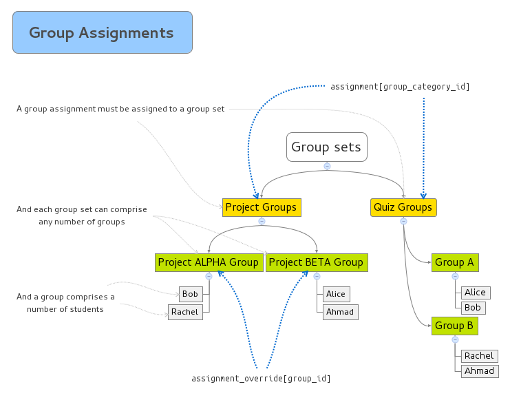

Assignments API
API for accessing assignment information.
API for accessing assignment information.
An Assignment object looks like:
{
// the ID of the assignment
id: 4,
// the name of the assignment
name: "some assignment",
// the assignment description, in an HTML fragment
description: "<p>Do the following:</p>...",
// the due date for the assignment. returns null if not present.
// NOTE: If this assignment has assignment overrides, this field
// will be the due date as it applies to the user requesting
// information from the API.
due_at: "2012-07-01T23:59:00-06:00",
// the lock date (assignment is locked after this date). returns
// null if not present.
// NOTE: If this assignment has assignment overrides, this field
// will be the lock date as it applies to the user requesting
// information from the API.
lock_at: "2012-07-01T23:59:00-06:00",
// the unlock date (assignment is unlocked after this date)
// returns null if not present
// NOTE: If this assignment has assignment overrides, this field
// will be the unlock date as it applies to the user requesting
// information from the API.
unlock_at: "2012-07-01T23:59:00-06:00",
// the ID of the course the assignment belongs to
course_id: 123,
// the URL to the assignment's web page
html_url: "http://canvas.example.com/courses/123/assignments/4",
// the ID of the assignment's group
assignment_group_id: 2,
// Allowed file extensions, which take effect if submission_types
// includes "online_upload".
allowed_extensions: [ "docx", "ppt" ],
// Boolean flag indicating whether or not Turnitin has been enabled
// for the assignment.
// NOTE: This flag will not appear unless your account has the
// Turnitin plugin available
turnitin_enabled: true,
// Settings to pass along to turnitin to control what kinds of matches
// should be considered.
// originality_report_visibility can be 'immediate', 'after_grading', or 'after_due_date'
// exclude_small_matches_type can be null, 'percent', 'words'
// exclude_small_matches_value:
// - if type is null, this will be null also
// - if type is 'percent', this will be a number between 0 and 100
// representing match size to exclude as a percentage of the document size.
// - if type is 'words', this will be number > 0 representing how many
// words a match must contain for it to be considered
// NOTE: This flag will not appear unless your account has the
// Turnitin plugin available
turnitin_settings: {
originality_report_visibility => 'after_grading',
s_paper_check => false,
internet_check => false,
journal_check => false,
exclude_biblio => false,
exclude_quoted => false,
exclude_small_matches_type => 'percent',
exclude_small_matches_value => 50,
},
// If this is a group assignment, boolean flag indicating whether or
// not students will be graded individually.
grade_group_students_individually: false,
// (Optional) assignment's settings for external tools if
// submission_types include "external_tool".
// Only url and new_tab are included.
// Use the "External Tools" API if you need more information about
// an external tool.
external_tool_tag_attributes: {
// URL to the external tool
url: "http://instructure.com",
// Whether or not there is a new tab for the external tool
new_tab: false,
// the identifier for this tool_tag
resource_link_id: 'ab81173af98b8c33e66a'
},
// Boolean indicating if peer reviews are required for this assignment
peer_reviews: false,
// Boolean indicating peer reviews are assigned automatically.
// If false, the teacher is expected to manually assign peer reviews.
automatic_peer_reviews: false,
// Integer representing the amount of reviews each user is assigned.
// NOTE: This key is NOT present unless you have automatic_peer_reviews
// set to true.
peer_review_count: 0,
// String representing a date the reviews are due by. Must be a date
// that occurs after the default due date. If blank, or date is not
// after the assignment's due date, the assignment's due date will
// be used.
// NOTE: This key is NOT present unless you have automatic_peer_reviews
// set to true.
peer_reviews_assign_at: "2012-07-01T23:59:00-06:00",
// the ID of the assignment’s group set (if this is a group assignment)
group_category_id: 1,
// if the requesting user has grading rights, the number of submissions that need grading.
needs_grading_count: 17,
// the sorting order of the assignment in the group
position: 1,
// the URL to the Canvas web UI page for the assignment
html_url: "https://...",
// whether the assignment is muted
muted: false,
// the maximum points possible for the assignment
points_possible: 12,
// the types of submissions allowed for this assignment
// list containing one or more of the following:
// "discussion_topic", "online_quiz", "on_paper", "none",
// "external_tool", "online_text_entry", "online_url", "online_upload"
// "media_recording"
submission_types: ["online_text_entry"],
// The type of grading the assignment receives; one of "pass_fail",
// "percent", "letter_grade", "points"
grading_type: "points",
// The id of the grading standard being applied to this assignment.
// Valid if grading_type is "letter_grade".
grading_standard_id: null,
// (Only visible if 'enable draft' account setting is on)
// whether the assignment is published
published: true,
// Whether or not this is locked for the user.
locked_for_user: false,
// (Optional) Information for the user about the lock. Present when locked_for_user is true.
lock_info: {
// Asset string for the object causing the lock
asset_string: "assignment_4",
// (Optional) Time at which this was/will be unlocked.
unlock_at: "2013-01-01T00:00:00-06:00",
// (Optional) Time at which this was/will be locked.
lock_at: "2013-02-01T00:00:00-06:00",
// (Optional) Context module causing the lock.
context_module: { ... }
},
// (Optional) An explanation of why this is locked for the user. Present when locked_for_user is true.
lock_explanation: "This assignment is locked until September 1 at 12:00am",
// (Optional) id of the associated quiz (applies only when submission_types is ["online_quiz"])
quiz_id: 620,
// (Optional) whether anonymous submissions are accepted (applies only to quiz assignments)
anonymous_submissions: false,
// (Optional) the DiscussionTopic associated with the assignment, if applicable
discussion_topic: { ... },
// (Optional) Boolean indicating if assignment will be frozen when it is copied.
// NOTE: This field will only be present if the AssignmentFreezer
// plugin is available for your account.
freeze_on_copy: false,
// (Optional) Boolean indicating if assignment is frozen for the calling user.
// NOTE: This field will only be present if the AssignmentFreezer
// plugin is available for your account.
frozen: false,
// (Optional) Array of frozen attributes for the assignment.
// Only account administrators currently have permission to
// change an attribute in this list. Will be empty if no attributes
// are frozen for this assignment.
// Possible frozen attributes are: title, description, lock_at,
// points_possible, grading_type, submission_types, assignment_group_id,
// allowed_extensions, group_category_id, notify_of_update, peer_reviews
// NOTE: This field will only be present if the AssignmentFreezer
// plugin is available for your account.
frozen_attributes: [ "title" ],
// (Optional) If 'submission' is included in the 'include' parameter,
// includes a Submission object that represents the current user's
// (user who is requesting information from the api) current submission
// for the assignment. See the Submissions API for an example
// response. If the user does not have a submission, this key
// will be absent.
submission: { ... },
// (Optional) If true, the rubric is directly tied to grading the assignment.
// Otherwise, it is only advisory. Included if there is an associated rubric.
use_rubric_for_grading: true,
// (Optional) An object describing the basic attributes of the rubric, including
// the point total. Included if there is an associated rubric.
rubric_settings: {
points_possible: 12
},
// (Optional) A list of scoring criteria and ratings for each rubric criterion.
// Included if there is an associated rubric.
rubric: [
{
"points": 10,
"id": "crit1",
"description": "Criterion 1",
"ratings": [
{
"points": 10,
"id": "rat1",
"description": "Full marks"
},
{
"points": 7,
"id": "rat2",
"description": "Partial answer"
},
{
"points": 0,
"id": "rat3",
"description": "No marks"
}
]
},
{
"points": 2,
"id": "crit2",
"description": "Criterion 2",
"ratings": [
{
"points": 2,
"id": "rat1",
"description": "Pass"
},
{
"points": 0,
"id": "rat2",
"description": "Fail"
}
]
}
]
}
An AssignmentOverride object looks like:
{
// NOTE: The Assignment Override feature is in beta! This API is not
// finalized and there could be breaking changes before its final
// release.
// the ID of the assignment override
id: 4,
// the ID of the assignment the override applies to
assignment_id: 123,
// the IDs of the override's target students (present if the override
// targets an adhoc set of students)
student_ids: [1, 2, 3],
// the ID of the override's target group (present if the override
// targets a group and the assignment is a group assignment)
group_id: 2,
// the ID of the overrides's target section (present if the override
// targets a section)
course_section_id: 1
// the title of the override
title: "an assignment override",
// the overridden due at (present if due_at is overridden)
due_at: "2012-07-01T23:59:00-06:00",
// the overridden all day flag (present if due_at is overridden)
all_day: true,
// the overridden all day date (present if due_at is overridden)
all_day_date: "2012-07-01",
// the overridden unlock at (present if unlock_at is overridden)
unlock_at: "2012-07-01T23:59:00-06:00",
// the overridden lock at, if any (present if lock_at is overridden)
lock_at: "2012-07-01T23:59:00-06:00"
}
Delete an assignment AssignmentsController#destroy
DELETE /api/v1/courses/:course_id/assignments/:id
Delete the given assignment.
Example Request:
curl https://<canvas>/api/v1/courses/<course_id>/assignments/<assignment_id> \
-X DELETE \
-H 'Authorization: Bearer <token>'
List assignments AssignmentsApiController#index
GET /api/v1/courses/:course_id/assignments
Returns the list of assignments for the current context. assignment.
Request Parameters:
-
include[]
- "submission"
-
Associations to include with the
Get a single assignment AssignmentsApiController#show
GET /api/v1/courses/:course_id/assignments/:id
Returns the assignment with the given id. assignment.
Request Parameters:
-
include[]
- "submission"
-
Associations to include with the
Create an assignment AssignmentsApiController#create
POST /api/v1/courses/:course_id/assignments
Create a new assignment for this course. The assignment is created in the active state.
Request Parameters:
-
assignment[name]
The assignment name.
-
assignment[position]
- Integer
-
The position of this assignment in the group when displaying assignment lists.
-
assignment[submission_types]
- Array
-
List of supported submission types for the assignment. Unless the assignment is allowing online submissions, the array should only have one element.
If not allowing online submissions, your options are:
"online_quiz" "none" "on_paper" "online_quiz" "discussion_topic" "external_tool"If you are allowing online submissions, you can have one or many allowed submission types:
"online_upload" "online_text_entry" "online_url" "media_recording" (Only valid when the Kaltura plugin is enabled)
-
assignment[allowed_extensions]
- Array
-
Allowed extensions if submission_types includes "online_upload"
Example:
allowed_extensions: ["docx","ppt"]
-
assignment[turnitin_enabled]
- Optional,Boolean
-
Only applies when the Turnitin plugin is enabled for a course and the submission_types array includes "online_upload". Toggles Turnitin submissions for the assignment. Will be ignored if Turnitin is not available for the course.
-
assignment[turnitin_settings]
- Optional
-
Settings to send along to turnitin. See Assignment object definition for format.
-
assignment[peer_reviews]
- Optional,Boolean
-
If submission_types does not include external_tool,discussion_topic, online_quiz, or on_paper, determines whether or not peer reviews will be turned on for the assignment.
-
assignment[automatic_peer_reviews]
- Optional,Boolean
-
Whether peer reviews will be assigned automatically by Canvas or if teachers must manually assign peer reviews. Does not apply if peer reviews are not enabled.
-
assignment[notify_of_update]
- Optional,Boolean
-
If true, Canvas will send a notification to students in the class notifying them that the content has changed.
-
assignment[group_category_id]
- Optional,Integer
-
If present, the assignment will become a group assignment assigned to the group.
-
assignment[grade_group_students_individually]
- Optional,Integer
-
If this is a group assignment, teachers have the options to grade students individually. If false, Canvas will apply the assignment's score to each member of the group. If true, the teacher can manually assign scores to each member of the group.
-
assignment[external_tool_tag_attributes]
- Optional
-
Hash of attributes if submission_types is ["external_tool"] Example:
external_tool_tag_attributes: { %r/ url to the external tool url: "http://instructure.com", %r/ create a new tab for the module, defaults to false. new_tab: false }
-
assignment[points_possible]
- Float
-
The maximum points possible on
the assignment.
-
assignment[grading_type]
- Optional, "pass_fail"|"percent"|"letter_grade"|"points"
-
The strategy used for grading the assignment. The assignment is ungraded if this field is omitted.
-
assignment[due_at]
- Timestamp
-
The day/time the assignment is due. Accepts times in ISO 8601 format, e.g. 2011-10-21T18:48Z.
-
assignment[lock_at]
- Timestamp
-
The day/time the assignment is locked after. Accepts times in ISO 8601 format, e.g. 2011-10-21T18:48Z.
-
assignment[unlock_at]
- Timestamp
-
The day/time the assignment is unlocked. Accepts times in ISO 8601 format, e.g. 2011-10-21T18:48Z.
-
assignment[description]
- String
-
The assignment's description, supports HTML.
-
assignment[assignment_group_id]
- Integer
-
The assignment group id to put the assignment in. Defaults to the top assignment group in the course.
-
assignment[muted]
- Boolean
-
Whether this assignment is muted. A muted assignment does not send change notifications and hides grades from students. Defaults to false.
-
assignment[assignment_overrides]
- Optional, [AssignmentOverride]
-
List of overrides for the assignment. NOTE: The assignment overrides feature is in beta.
-
assignment[published]
- Boolean
- Optional
Whether this assignment is published. (Only useful if 'enable draft' account setting is on) Unpublished assignments are not visible to students.
Edit an assignment AssignmentsApiController#update
PUT /api/v1/courses/:course_id/assignments/:id
Modify an existing assignment. See the documentation for assignment creation.
If the assignment key is absent, any existing overrides are kept as is. If the assignment key is present, existing overrides are updated or deleted (and new ones created, as necessary) to match the provided list.
NOTE: The assignment overrides feature is in beta.
Returns a AssignmentList assignment overrides AssignmentOverridesController#index
BETA: This API endpoint is not finalized, and there could be breaking changes before its final release.
GET /api/v1/courses/:course_id/assignments/:assignment_id/overrides
Returns the list of overrides for this assignment that target sections/groups/students visible to the current user.
Returns a list of AssignmentOverridesGet a single assignment override AssignmentOverridesController#show
BETA: This API endpoint is not finalized, and there could be breaking changes before its final release.
GET /api/v1/courses/:course_id/assignments/:assignment_id/overrides/:id
Returns details of the the override with the given id.
Returns a AssignmentOverrideRedirect to the assignment override for a group AssignmentOverridesController#group_alias
BETA: This API endpoint is not finalized, and there could be breaking changes before its final release.
GET /api/v1/groups/:group_id/assignments/:assignment_id/override
Responds with a redirect to the override for the given group, if any (404 otherwise).
Redirect to the assignment override for a section AssignmentOverridesController#section_alias
BETA: This API endpoint is not finalized, and there could be breaking changes before its final release.
GET /api/v1/sections/:course_section_id/assignments/:assignment_id/override
Responds with a redirect to the override for the given section, if any (404 otherwise).
Create an assignment override AssignmentOverridesController#create
BETA: This API endpoint is not finalized, and there could be breaking changes before its final release.
POST /api/v1/courses/:course_id/assignments/:assignment_id/overrides
One of student_ids, group_id, or course_section_id must be present. At most one should be present; if multiple are present only the most specific (student_ids first, then group_id, then course_section_id) is used and any others are ignored.
Request Parameters:
-
assignment_override[student_ids][]
- Optional, Integer
-
The IDs of
the override's target students. If present, the IDs must each identify a user with an active student enrollment in the course that is not already targetted by a different adhoc override.
-
assignment_override[title]
- Optional
-
The title of the adhoc
assignment override. Required if student_ids is present, ignored otherwise (the title is set to the name of the targetted group or section instead).
-
assignment_override[group_id]
- Optional, Integer
-
The ID of the
override's target group. If present, the following conditions must be met for the override to be successful:
-
the assignment MUST be a group assignment (a group_category_id is assigned to it)
-
the ID must identify an active group in the group set the assignment is in
-
the ID must not be targetted by a different override
See Appendix: Group assignments for more info.
-
assignment_override[course_section_id]
- Optional, Integer
-
The ID
of the override's target section. If present, must identify an active section of the assignment's course not already targetted by a different override.
-
assignment_override[due_at]
- Timestamp, Optional
-
The day/time
the overridden assignment is due. Accepts times in ISO 8601 format, e.g. 2011-10-21T18:48Z. If absent, this override will not affect due date. May be present but null to indicate the override removes any previous due date.
-
assignment_override[unlock_at]
- Timestamp, Optional
-
The day/time
the overridden assignment becomes unlocked. Accepts times in ISO 8601 format, e.g. 2011-10-21T18:48Z. If absent, this override will not affect the unlock date. May be present but null to indicate the override removes any previous unlock date.
-
assignment_override[lock_at]
- Timestamp, Optional
-
The day/time
the overridden assignment becomes locked. Accepts times in ISO 8601 format, e.g. 2011-10-21T18:48Z. If absent, this override will not affect the lock date. May be present but null to indicate the override removes any previous lock date.
Example Request:
curl 'http://<canvas>/api/v1/courses/1/assignments/2/overrides.json' \
-X POST \
-F 'assignment_override[student_ids][]=8' \
-F 'assignment_override[title]=Fred Flinstone' \
-F 'assignment_override[due_at]=2012-10-08T21:00:00Z' \
-H "Authorization: Bearer <token>"
Update an assignment override AssignmentOverridesController#update
BETA: This API endpoint is not finalized, and there could be breaking changes before its final release.
PUT /api/v1/courses/:course_id/assignments/:assignment_id/overrides/:id
All current overridden values must be supplied if they are to be retained; e.g. if due_at was overridden, but this PUT omits a value for due_at, due_at will no longer be overridden. If the override is adhoc and student_ids is not supplied, the target override set is unchanged. Target override sets cannot be changed for group or section overrides.
Request Parameters:
-
assignment_override[student_ids]
- [Integer], Optional
-
The IDs of the
override's target students. If present, the IDs must each identify a user with an active student enrollment in the course that is not already targetted by a different adhoc override. Ignored unless the override being updated is adhoc.
-
assignment_override[title]
- Optional
-
The title of an adhoc
assignment override. Ignored unless the override being updated is adhoc.
-
assignment_override[due_at]
- Timestamp, Optional
-
The day/time
the overridden assignment is due. Accepts times in ISO 8601 format, e.g. 2011-10-21T18:48Z. If absent, this override will not affect due date. May be present but null to indicate the override removes any previous due date.
-
assignment_override[unlock_at]
- Timestamp, Optional
-
The day/time
the overridden assignment becomes unlocked. Accepts times in ISO 8601 format, e.g. 2011-10-21T18:48Z. If absent, this override will not affect the unlock date. May be present but null to indicate the override removes any previous unlock date.
-
assignment_override[lock_at]
- Timestamp, Optional
-
The day/time
the overridden assignment becomes locked. Accepts times in ISO 8601 format, e.g. 2011-10-21T18:48Z. If absent, this override will not affect the lock date. May be present but null to indicate the override removes any previous lock date.
Example Request:
curl 'http://<canvas>/api/v1/courses/1/assignments/2/overrides/3.json' \
-X PUT \
-F 'assignment_override[title]=Fred Flinstone' \
-F 'assignment_override[due_at]=2012-10-08T21:00:00Z' \
-H "Authorization: Bearer <token>"
Delete an assignment override AssignmentOverridesController#destroy
BETA: This API endpoint is not finalized, and there could be breaking changes before its final release.
DELETE /api/v1/courses/:course_id/assignments/:assignment_id/overrides/:id
Deletes an override and returns its former details.
Example Request:
curl 'http://<canvas>/api/v1/courses/1/assignments/2/overrides/3.json' \
-X DELETE \
-H "Authorization: Bearer <token>"
Appendixes
Appendix: Group assignments
The following diagram provides an example to describe the structure of group assignments. It also shows the correspondence between the fields of an assignment override API request and the resources they map to.

The components in yellow
are group sets. When creating or updating an assignment override,
you will refer to the group set by the group_category_id field.
The components in green
are groups. An assignment can become a group assignment iff it
has a group_category_id that maps to an active group set, as well
as a group_id that maps to an active, valid group. In the API,
you will be specifying the group by the group_id field of the
assignment_override construct.
Important: an assignment must be assigned to a group set
(the group_category_id field) on creation for an override
with a group_id to be effective.
See Also: